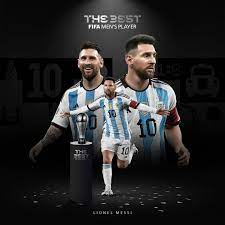
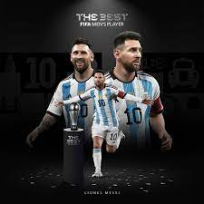

te mostraremos el mejor jugador del año 2023 y sus caracteristicas mas destacadas
THE FIFA
Como desde hace ocho ediciones, la FIFA otorgó el premio The Best 2023 a la mejor temporada
de cada futbolista en la categoría masculina y femenina. Lionel Messi fue reconocido con el galardón
por su gran actuación en las canchas durante la pasada temporada.
Entre los finalistas a conseguir el premio también estaban Erling Haaland,
quien consiguió la Bota de Oro europea; fue ganador del triplete con el Man City en la Champions League;
la Premier League y la FA Cup, además de obtener la bota de oro de la Premier League 2022-2023 y la Supercopa de Europa.
El otro finalista era Kylian Mbappé, campeón de la liga y máximo goleador con 29 tantos.
 
